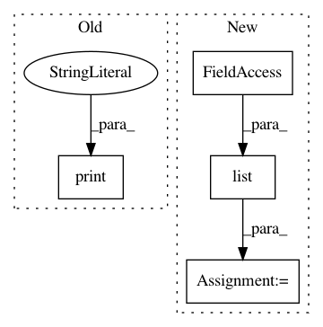

e03b1da510463be2b74dbbffc633ac7973da3869,talos/__init__.py,,,#,18
Before Change
if is_connected() is True:
import astetik as plots
else:
print("NO INTERNET CONNECTION: Reporting plots will not work.")
from kerasplotlib import TrainingLog as live
After Change
"icu_mortality"]
for sub in template_sub:
for key in list(sub.__dict__):
if key.startswith("__") is False:
if key not in keep_from_templates:
delattr(sub, key)
del commands, parameters, scan, reducers, model, metrics, key, del_from_utils
del examples, sub, keep_from_templates, template_sub
__version__ = "0.5.0"
In pattern: SUPERPATTERN
Frequency: 3
Non-data size: 4
Instances
Project Name: autonomio/talos
Commit Name: e03b1da510463be2b74dbbffc633ac7973da3869
Time: 2019-02-22
Author: mailme@mikkokotila.com
File Name: talos/__init__.py
Class Name:
Method Name:
Project Name: streamlit/streamlit
Commit Name: da1e0e6720d6f95297f1ff0dcd2ef3f19d0da6d3
Time: 2018-05-21
Author: armando@playground.global
File Name: lib/streamlit/Proxy.py
Class Name: Proxy
Method Name: save_cloud
Project Name: streamlit/streamlit
Commit Name: c5223d64a7a0e7d5b69c4dd39cd712e9e53b6e02
Time: 2018-05-18
Author: armando@playground.global
File Name: lib/streamlit/Proxy.py
Class Name: Proxy
Method Name: save_cloud